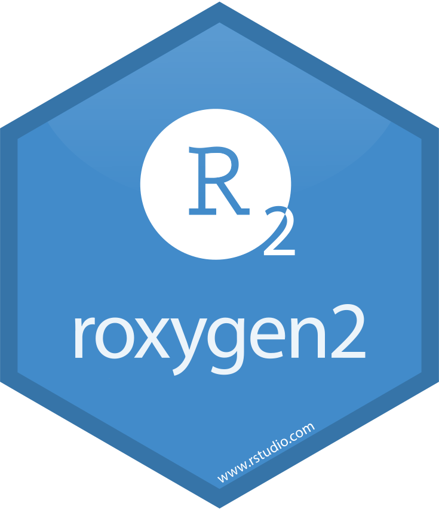

From forecast to fable, design decisions for statistical software.
13th July 2023 @ NYR 2023
Mitchell O’Hara-Wild, Nectric


A brief history of forecasting in R

The ts package is added to R v0.65
Time-series functionality from S-PLUS in R.
Adds many great functions, including ts(), stl(), arima() and… filter()!
Jul 1999

Rob creates the forecast package
The package extends {ts} with various functions used by Rob in his time-series consulting projects, such as ets() and thetaf().
Jul 2003
I start working on the forecast package
 Working with Rob at Monash University, I start fixing bugs, improving forecasting workflows and adding ‘tidy’ features to the package.
Working with Rob at Monash University, I start fixing bugs, improving forecasting workflows and adding ‘tidy’ features to the package.
Dec 2015

Earo creates the tsibble package
As part of her PhD, Earo creates tsibble - a rectangular and tidyverse compatible time series data alternative to ts().
Jul 2017

Mitchell creates the fable package
Building upon tsibble, I create fable - the tidy time series forecasting successor to the forecast package.
Feb 2018
The forecast package is retired
Still maintained, but no new features.
Sep 2019
Tools for making R packages
Many helpful tools make creating a package easy
From getting started, writing documentation and testing code, there’s a package for that.
- 


Tools for designing R packages
There aren’t (m)any tools for designing packages
Perhaps LLMs can help with this too.
There are guidelines for good design practices
Designing R packages involves many difficult decisions.
Good design is subjective, but is critically important for your package to be easy to learn and use.
The design varies with the package’s purpose, however tidyverse design offers four guiding principles:
- human centered
- consistent
- composable
- inclusive

Design of the forecast package
- Forecasting individual time series
- Regular and infrequent observations
(monthly, quarterly or annually) - Point forecasts and intervals
- Consistent with
tsmodels
Design of the fable package
- Forecasting many time series
- Observations at any time
(sub-daily, irregular, monthly, etc.) - Forecast distributions
- Consistent with the
tidyverse

–> –>
Design element: data
Consider trips to Australia 🇦🇺 🦘
# A tibble: 320 x 3
Purpose Quarter Trips
<chr> <date> <dbl>
1 Business 1998-01-01 3599.
2 Business 1998-04-01 3724.
3 Business 1998-07-01 4356.
4 Business 1998-10-01 3796.
5 Business 1999-01-01 3335.
6 Business 1999-04-01 4714.
7 Business 1999-07-01 4190.
8 Business 1999-10-01 3701.
9 Business 2000-01-01 3562.
10 Business 2000-04-01 4018.
# i 310 more rows
Design element: data
tourism_ts <- tourism |>
group_by(Quarter) |>
summarise(Trips = sum(Trips)) |>
pull(Trips) |>
ts(start = c(1998, 1), frequency = 4)
tourism_ts Qtr1 Qtr2 Qtr3 Qtr4
1998 23182.20 20323.38 19826.64 20830.13
1999 22087.35 21458.37 19914.19 20027.93
2000 22339.29 19941.06 20242.83 21427.82
2001 21522.70 20928.56 20764.42 21036.63
2002 22346.20 20877.03 21299.14 21864.63
2003 22061.78 21250.28 20685.21 21045.21
2004 22949.05 21494.59 20799.52 20364.97
2005 22534.34 18672.74 18695.80 19311.79
2006 22517.07 21064.07 18750.97 20533.68
2007 21691.81 21430.72 20078.19 20362.62
2008 23274.42 18982.59 19130.62 19321.64
2009 20102.11 18323.83 18915.86 19104.73
2010 20135.78 18868.81 19549.09 19778.76
2011 20266.36 20399.18 20422.86 20123.64
2012 21923.70 20274.42 19646.08 21557.58
2013 21984.28 20971.97 20397.09 21338.32
2014 24278.73 23789.94 22210.87 23950.41
2015 25023.74 23798.91 23485.75 25140.16
2016 26660.64 24285.03 24191.32 26347.60
2017 27496.39 26113.61 26506.31 27593.55
Design element: data
tourism_ts <- tourism |>
group_by(Quarter) |>
summarise(Trips = sum(Trips)) |>
pull(Trips) |>
ts(start = c(1998, 1), frequency = 4)
tourism_ts |>
window(start = c(2012, 2)) Qtr1 Qtr2 Qtr3 Qtr4
2012 20274.42 19646.08 21557.58
2013 21984.28 20971.97 20397.09 21338.32
2014 24278.73 23789.94 22210.87 23950.41
2015 25023.74 23798.91 23485.75 25140.16
2016 26660.64 24285.03 24191.32 26347.60
2017 27496.39 26113.61 26506.31 27593.55
Design element: data
Business Holiday Other Visiting
1998 Q1 3598.631 11806.038 679.6751 7097.853
1998 Q2 3723.660 9275.662 656.2045 6667.853
1998 Q3 4356.454 8642.489 816.3642 6011.334
1998 Q4 3795.539 9299.524 668.2381 7066.829
1999 Q1 3334.554 11172.027 675.0130 6905.760
1999 Q2 4714.239 9607.613 823.9023 6312.619
Design element: data
The ts data format
Pros
- Very minimal and efficient
Cons
- Doesn’t work well with multiple series and variables
- Limited domain specific functions like
window() - Requires regular time series
Design element: data
library(tsibble)
tourism_tsbl <- tourism |>
mutate(Quarter = yearquarter(Quarter)) |>
as_tsibble(
index = Quarter,
key = Purpose
)
tourism_tsbl# A tsibble: 320 x 3 [1Q]
# Key: Purpose [4]
Purpose Quarter Trips
<chr> <qtr> <dbl>
1 Business 1998 Q1 3599.
2 Business 1998 Q2 3724.
3 Business 1998 Q3 4356.
4 Business 1998 Q4 3796.
5 Business 1999 Q1 3335.
6 Business 1999 Q2 4714.
7 Business 1999 Q3 4190.
8 Business 1999 Q4 3701.
9 Business 2000 Q1 3562.
10 Business 2000 Q2 4018.
# i 310 more rows
Design element: data
library(tsibble)
tourism_tsbl <- tourism |>
mutate(Quarter = yearquarter(Quarter)) |>
as_tsibble(
index = Quarter,
key = Purpose
)
tourism_tsbl |>
filter(Quarter >= yearquarter("2012 Q2"))# A tsibble: 92 x 3 [1Q]
# Key: Purpose [4]
Purpose Quarter Trips
<chr> <qtr> <dbl>
1 Business 2012 Q2 3746.
2 Business 2012 Q3 4091.
3 Business 2012 Q4 3825.
4 Business 2013 Q1 3099.
5 Business 2013 Q2 4036.
6 Business 2013 Q3 4096.
7 Business 2013 Q4 3704.
8 Business 2014 Q1 3917.
9 Business 2014 Q2 4505.
10 Business 2014 Q3 4726.
# i 82 more rows
Design element: data
The tsibble data format
Pros
- Works great with multiple series and variables
- Fully compatible with
tidyversefunctions - Supports observations at any time and frequency
Cons
- Less space efficient
Tip
Design for compatibility with familiar functions.
Design element: models
ETS(A,A,A)
Call:
ets(y = tourism_ts, model = "AAA", damped = FALSE, lambda = 0)
Box-Cox transformation: lambda= 0
Smoothing parameters:
alpha = 0.1955
beta = 0.0339
gamma = 1e-04
Initial states:
l = 9.9608
b = -0.0024
s = -0.0044 -0.0368 -0.0156 0.0569
sigma: 0.0421
AIC AICc BIC
-146.6778 -144.1064 -125.2396
Design element: models
Point Forecast Lo 80 Hi 80 Lo 95 Hi 95
2018 Q1 27496.39 25939.94 29052.84 25116.00 29876.78
2018 Q2 26113.61 24557.15 27670.06 23733.22 28493.99
2018 Q3 26506.31 24949.86 28062.77 24125.93 28886.70
2018 Q4 27593.55 26037.10 29150.01 25213.17 29973.94
2019 Q1 27496.39 25295.23 29697.54 24130.01 30862.77
2019 Q2 26113.61 23912.45 28314.76 22747.23 29479.98
2019 Q3 26506.31 24305.16 28707.47 23139.94 29872.69
2019 Q4 27593.55 25392.40 29794.71 24227.18 30959.93
Design element: models
$stl
Data Trend Seasonal4 Remainder
1998 Q1 10.051140 9.967165 0.0581990709 0.0257757070
1998 Q2 9.919527 9.957989 -0.0160347791 -0.0224273863
1998 Q3 9.894782 9.950423 -0.0351850627 -0.0204563223
1998 Q4 9.944156 9.946338 -0.0070831761 0.0049004596
1999 Q1 10.002760 9.955351 0.0582772427 -0.0108677499
1999 Q2 9.973870 9.952333 -0.0158879849 0.0374252377
1999 Q3 9.899188 9.946055 -0.0351033714 -0.0117634535
1999 Q4 9.904883 9.937231 -0.0074922973 -0.0248556206
2000 Q1 10.014103 9.931819 0.0584048140 0.0238785364
2000 Q2 9.900536 9.941186 -0.0157054994 -0.0249444137
2000 Q3 9.915556 9.946715 -0.0350088677 0.0038496856
2000 Q4 9.972446 9.948842 -0.0079166950 0.0315205013
2001 Q1 9.976863 9.955009 0.0583114185 -0.0364571537
2001 Q2 9.948870 9.956874 -0.0153202584 0.0073162086
2001 Q3 9.940996 9.961713 -0.0345828592 0.0138661220
2001 Q4 9.954020 9.964387 -0.0086405754 -0.0017258845
2002 Q1 10.014412 9.965678 0.0581074023 -0.0093743589
2002 Q2 9.946405 9.974509 -0.0151631262 -0.0129413035
2002 Q3 9.966422 9.980744 -0.0345228331 0.0202012987
2002 Q4 9.992626 9.979714 -0.0097784356 0.0226900030
2003 Q1 10.001602 9.975533 0.0607560274 -0.0346867540
2003 Q2 9.964125 9.968887 -0.0138166559 0.0090549553
2003 Q3 9.937174 9.970273 -0.0374536341 0.0043554083
2003 Q4 9.954428 9.974594 -0.0121012844 -0.0080647323
2004 Q1 10.041032 9.977493 0.0638928308 -0.0003541052
2004 Q2 9.975556 9.976568 -0.0122260212 0.0112142539
2004 Q3 9.942685 9.968629 -0.0404181896 0.0144742303
2004 Q4 9.921572 9.948876 -0.0146447579 -0.0126590821
2005 Q1 10.022795 9.917536 0.0702368457 0.0350221651
2005 Q2 9.834820 9.895508 -0.0143312132 -0.0463570270
2005 Q3 9.836054 9.886677 -0.0427820746 -0.0078410605
2005 Q4 9.868471 9.903763 -0.0158888074 -0.0194034963
2006 Q1 10.022029 9.923484 0.0766329422 0.0219119107
2006 Q2 9.955324 9.930770 -0.0159237173 0.0404777694
2006 Q3 9.839001 9.930785 -0.0441138432 -0.0476700342
2006 Q4 9.929822 9.927773 -0.0158382144 0.0178865010
2007 Q1 9.984690 9.940975 0.0735216531 -0.0298067192
2007 Q2 9.972581 9.948763 -0.0173753035 0.0411927700
2007 Q3 9.907390 9.955155 -0.0394646716 -0.0083006403
2007 Q4 9.921456 9.950076 -0.0134290746 -0.0151905834
2008 Q1 10.055110 9.930120 0.0693853151 0.0556043692
2008 Q2 9.851278 9.913451 -0.0194145386 -0.0427592688
2008 Q3 9.859046 9.888735 -0.0348498152 0.0051608115
2008 Q4 9.868981 9.869484 -0.0106535991 0.0101505260
2009 Q1 9.908580 9.860078 0.0620933157 -0.0135918596
2009 Q2 9.815957 9.856665 -0.0195679967 -0.0211399817
2009 Q3 9.847756 9.858547 -0.0303134883 0.0195228202
2009 Q4 9.857691 9.863173 -0.0079046780 0.0024228746
2010 Q1 9.910253 9.868034 0.0547420223 -0.0125226434
2010 Q2 9.845265 9.876858 -0.0200628959 -0.0115298008
2010 Q3 9.880684 9.884889 -0.0264310028 0.0222258738
2010 Q4 9.892364 9.893091 -0.0060106199 0.0052832223
2011 Q1 9.916718 9.905991 0.0506619257 -0.0399349469
2011 Q2 9.923250 9.917608 -0.0157858902 0.0214274956
2011 Q3 9.924410 9.930488 -0.0298929000 0.0238156073
2011 Q4 9.909650 9.936941 -0.0037761398 -0.0235141484
2012 Q1 9.995324 9.931988 0.0469331642 0.0164025770
2012 Q2 9.917115 9.934869 -0.0113766064 -0.0063766874
2012 Q3 9.885633 9.943248 -0.0334902300 -0.0241247613
2012 Q4 9.978483 9.950020 -0.0018247225 0.0302878451
2013 Q1 9.998083 9.959047 0.0478976961 -0.0088620163
2013 Q2 9.950942 9.960944 -0.0124366294 0.0024347654
2013 Q3 9.923148 9.970353 -0.0356741678 -0.0115314161
2013 Q4 9.968260 9.997979 0.0006576359 -0.0303767861
2014 Q1 10.097356 10.029345 0.0488224403 0.0191882382
2014 Q2 10.077018 10.055107 -0.0135253890 0.0354364231
2014 Q3 10.008337 10.069867 -0.0378649825 -0.0236654430
2014 Q4 10.083741 10.073342 0.0031549476 0.0072440371
2015 Q1 10.127580 10.081556 0.0489142334 -0.0028905205
2015 Q2 10.077395 10.093661 -0.0138580520 -0.0024073477
2015 Q3 10.064149 10.107931 -0.0386959618 -0.0050863441
2015 Q4 10.132222 10.119911 0.0036888551 0.0086216722
2016 Q1 10.190944 10.125883 0.0492055150 0.0158548462
2016 Q2 10.097615 10.132884 -0.0140150604 -0.0212537432
2016 Q3 10.093749 10.143105 -0.0394063214 -0.0099496891
2016 Q4 10.179133 10.158151 0.0042896310 0.0166915041
2017 Q1 10.221810 10.177441 0.0494589369 -0.0050898674
2017 Q2 10.170212 10.194472 -0.0142266497 -0.0100339874
2017 Q3 10.185138 10.210220 -0.0399205720 0.0148389410
2017 Q4 10.225337 10.226500 0.0047578144 -0.0059204865
$model
ETS(A,A,N)
Call:
ets(y = x, model = etsmodel, allow.multiplicative.trend = allow.multiplicative.trend)
Smoothing parameters:
alpha = 0.4956
beta = 0.0391
Initial states:
l = 9.9659
b = -0.0012
sigma: 0.0361
AIC AICc BIC
-174.7627 -173.9519 -162.8526
$modelfunction
function (x, ...)
{
return(ets(x, model = etsmodel, allow.multiplicative.trend = allow.multiplicative.trend,
...))
}
<bytecode: 0x55f8440e3758>
<environment: 0x55f8440e5f00>
$lambda
[1] 0
attr(,"biasadj")
[1] FALSE
$x
Qtr1 Qtr2 Qtr3 Qtr4
1998 23182.20 20323.38 19826.64 20830.13
1999 22087.35 21458.37 19914.19 20027.93
2000 22339.29 19941.06 20242.83 21427.82
2001 21522.70 20928.56 20764.42 21036.63
2002 22346.20 20877.03 21299.14 21864.63
2003 22061.78 21250.28 20685.21 21045.21
2004 22949.05 21494.59 20799.52 20364.97
2005 22534.34 18672.74 18695.80 19311.79
2006 22517.07 21064.07 18750.97 20533.68
2007 21691.81 21430.72 20078.19 20362.62
2008 23274.42 18982.59 19130.62 19321.64
2009 20102.11 18323.83 18915.86 19104.73
2010 20135.78 18868.81 19549.09 19778.76
2011 20266.36 20399.18 20422.86 20123.64
2012 21923.70 20274.42 19646.08 21557.58
2013 21984.28 20971.97 20397.09 21338.32
2014 24278.73 23789.94 22210.87 23950.41
2015 25023.74 23798.91 23485.75 25140.16
2016 26660.64 24285.03 24191.32 26347.60
2017 27496.39 26113.61 26506.31 27593.55
$series
[1] "tourism_ts"
$m
[1] 4
$fitted
Qtr1 Qtr2 Qtr3 Qtr4
1998 22536.38 21217.04 20339.25 20598.74
1999 22060.48 20449.02 20536.20 20758.37
2000 21716.77 20411.02 19735.37 20496.68
2001 22385.69 20362.30 20236.05 21044.49
2002 22502.92 20844.32 20465.29 21435.73
2003 23288.96 21052.77 20673.22 21227.93
2004 22817.53 21220.85 20787.89 21363.21
2005 22696.60 20763.32 19050.50 19276.44
2006 21043.57 19776.73 19825.38 19783.42
2007 22006.16 19913.65 20220.18 20695.80
2008 22304.16 20880.41 19573.28 19769.50
2009 20941.87 18810.70 18252.05 18904.09
2010 20139.01 18600.16 18538.79 19387.21
2011 20697.43 19127.42 19480.71 20518.01
2012 21412.87 20488.94 19978.64 20480.28
2013 22154.62 20843.48 20496.30 21271.69
2014 22430.45 22059.31 22560.54 23529.37
2015 25084.74 23751.54 23411.83 24698.84
2016 26345.82 25146.05 24322.61 25573.86
2017 27435.21 26040.40 25683.79 27602.49
$residuals
Qtr1 Qtr2 Qtr3 Qtr4
1998 0.0282539261 -0.0430326292 -0.0255261996 0.0111706003
1999 0.0012175381 0.0481797702 -0.0307565416 -0.0358221573
2000 0.0282623642 -0.0232940678 0.0253881677 0.0444274626
2001 -0.0393138493 0.0274296008 0.0257752932 -0.0003738740
2002 -0.0069889511 0.0015680240 0.0399364882 0.0198112653
2003 -0.0541329304 0.0093377306 0.0005799431 -0.0086449034
2004 0.0057477082 0.0128169071 0.0005591880 -0.0478535825
2005 -0.0071748037 -0.1061233565 -0.0187942547 0.0018322177
2006 0.0676786001 0.0630628559 -0.0557170719 0.0372218549
2007 -0.0143874004 0.0734200625 -0.0070467575 -0.0162298304
2008 0.0425814515 -0.0952893005 -0.0228747387 -0.0229146424
2009 -0.0409258921 -0.0262238998 0.0357235973 0.0105577944
2010 -0.0001608227 0.0143399016 0.0530638022 0.0199949536
2011 -0.0210470543 0.0643719747 0.0472304602 -0.0194078810
2012 0.0235762334 -0.0105249496 -0.0167857264 0.0512651882
2013 -0.0077184478 0.0061456266 -0.0048520194 0.0031274478
2014 0.0791816072 0.0755283504 -0.0156203964 0.0177359402
2015 -0.0024347349 0.0019926648 0.0031523290 0.0177105339
2016 0.0118784950 -0.0348406942 -0.0054125924 0.0298063423
2017 0.0022274199 0.0028073792 0.0315231317 -0.0003238353
attr(,"class")
[1] "stlm"
Design element: models
library(fable)
tourism_tsbl |>
model(
ets = ETS(log(Trips+1) ~ error("A") + trend("A") + season("A")),
lm = TSLM(log(Trips+1) ~ trend() + season()),
snaive = SNAIVE(Trips)
)# A mable: 4 x 4
# Key: Purpose [4]
Purpose ets lm snaive
<chr> <model> <model> <model>
1 Business <ETS(A,A,A)> <TSLM> <SNAIVE>
2 Holiday <ETS(A,A,A)> <TSLM> <SNAIVE>
3 Other <ETS(A,A,A)> <TSLM> <SNAIVE>
4 Visiting <ETS(A,A,A)> <TSLM> <SNAIVE>
Design element: models
library(feasts)
tourism_tsbl |>
model(
stlm = decomposition_model(
STL(log(Trips + 1)),
ETS(season_adjust ~ season("N"))
)
)# A mable: 4 x 2
# Key: Purpose [4]
Purpose stlm
<chr> <model>
1 Business <STL decomposition model>
2 Holiday <STL decomposition model>
3 Other <STL decomposition model>
4 Visiting <STL decomposition model>
Design element: models
Key differences
Improving upon forecast, the fable package…
- applies a consistent
y~xmodel interface - separates model specification from model fitting
- allows any combination of decomposition & model
Tip
Design consistent interfaces with small components.
Design element: accuracy
Design element: accuracy
Design element: accuracy
tourism_tsbl |>
summarise(Trips = sum(Trips)) |>
model(
ets = ETS(log(Trips+1) ~ error("A") + trend("A") + season("A")),
lm = TSLM(log(Trips+1) ~ trend() + season()),
snaive = SNAIVE(Trips)
) |>
accuracy()# A tibble: 3 x 10
.model .type ME RMSE MAE MPE MAPE MASE RMSSE ACF1
<chr> <chr> <dbl> <dbl> <dbl> <dbl> <dbl> <dbl> <dbl> <dbl>
1 ets Training 134. 830. 630. 0.519 2.99 0.664 0.684 0.288
2 lm Training 66.4 1705. 1415. -0.298 6.53 1.49 1.40 0.812
3 snaive Training 310. 1215. 949. 1.15 4.38 1 1 0.358
Design element: accuracy
med_abs_e <- function(.resid, ...){
median(abs(.resid), na.rm=TRUE)
}
tourism_tsbl |>
summarise(Trips = sum(Trips)) |>
model(
ets = ETS(log(Trips+1) ~ error("A") + trend("A") + season("A")),
lm = TSLM(log(Trips+1) ~ trend() + season()),
snaive = SNAIVE(Trips)
) |>
accuracy(measures = lst(med_abs_e))# A tibble: 3 x 3
.model .type med_abs_e
<chr> <chr> <dbl>
1 ets Training 481.
2 lm Training 1233.
3 snaive Training 809.
Design element: accuracy
med_abs_e <- function(.resid, ...){
median(abs(.resid), na.rm=TRUE)
}
tourism_tsbl |>
model(
ets = ETS(log(Trips+1) ~ error("A") + trend("A") + season("A")),
lm = TSLM(log(Trips+1) ~ trend() + season()),
snaive = SNAIVE(Trips)
) |>
accuracy(measures = lst(med_abs_e))# A tibble: 12 x 4
Purpose .model .type med_abs_e
<chr> <chr> <chr> <dbl>
1 Business ets Training 172.
2 Business lm Training 375.
3 Business snaive Training 225.
4 Holiday ets Training 223.
5 Holiday lm Training 387.
6 Holiday snaive Training 329.
7 Other ets Training 71.4
8 Other lm Training 128.
9 Other snaive Training 95.6
10 Visiting ets Training 233.
11 Visiting lm Training 462.
12 Visiting snaive Training 351.
Design element: accuracy
med_abs_e <- function(.resid, ...){
median(abs(.resid), na.rm=TRUE)
}
tourism_tsbl |>
model(
ets = ETS(log(Trips+1) ~ error("A") + trend("A") + season("A")),
lm = TSLM(log(Trips+1) ~ trend() + season()),
snaive = SNAIVE(Trips)
) |>
accuracy(measures = lst(med_abs_e)) |>
group_by(.model) |>
summarise(mean(med_abs_e))# A tibble: 3 x 2
.model `mean(med_abs_e)`
<chr> <dbl>
1 ets 175.
2 lm 338.
3 snaive 250.
Design element: forecasts
Point Forecast Lo 80 Hi 80 Lo 95 Hi 95
2018 Q1 29567.60 28014.39 31206.92 27225.48 32111.20
2018 Q2 27887.75 26385.76 29475.24 25623.69 30351.86
2018 Q3 27685.96 26147.87 29314.54 25368.54 30215.08
2018 Q4 28999.64 27328.14 30773.38 26482.66 31755.85
2019 Q1 31266.10 29386.46 33265.96 28437.63 34375.90
2019 Q2 29489.76 27632.34 31472.02 26696.93 32574.75
2019 Q3 29276.38 27337.34 31352.95 26363.41 32511.20
2019 Q4 30665.52 28523.76 32968.09 27451.22 34256.18
Design element: forecasts
library(forecast)
tourism_ts |>
ets(model = "AAA", damped = FALSE,
lambda = 0) |>
forecast(level = c(50, 75)) Point Forecast Lo 50 Hi 50 Lo 75 Hi 75
2018 Q1 29567.60 28739.69 30419.35 28169.58 31035.00
2018 Q2 27887.75 27086.89 28712.30 26535.74 29308.65
2018 Q3 27685.96 26865.50 28531.48 26301.32 29143.50
2018 Q4 28999.64 28107.55 29920.04 27494.74 30586.91
2019 Q1 31266.10 30262.32 32303.18 29573.59 33055.48
2019 Q2 29489.76 28497.13 30516.95 27817.00 31263.11
2019 Q3 29276.38 28239.29 30351.54 27529.80 31133.76
2019 Q4 30665.52 29518.98 31856.59 28735.97 32724.63
Design element: forecasts
library(forecast)
fc <- tourism_ts |>
ets(model = "AAA", damped = FALSE,
lambda = 0) |>
forecast(level = c(50, 75))
fc$mean Qtr1 Qtr2 Qtr3 Qtr4
2018 29567.60 27887.75 27685.96 28999.64
2019 31266.10 29489.76 29276.38 30665.52 50% 75%
2018 Q1 30419.35 31035.00
2018 Q2 28712.30 29308.65 50% 75%
2018 Q1 28739.69 28169.58
2018 Q2 27086.89 26535.74
Design element: forecasts
# A fable: 32 x 5 [1Q]
# Key: Purpose, .model [4]
Purpose .model Quarter Trips .mean
<chr> <chr> <qtr> <dist> <dbl>
1 Business ets 2018 Q1 t(N(8.5, 0.0054)) 4855.
2 Business ets 2018 Q2 t(N(8.7, 0.0064)) 5920.
3 Business ets 2018 Q3 t(N(8.8, 0.0075)) 6440.
4 Business ets 2018 Q4 t(N(8.7, 0.0087)) 6057.
5 Business ets 2019 Q1 t(N(8.5, 0.01)) 5169.
6 Business ets 2019 Q2 t(N(8.7, 0.012)) 6305.
7 Business ets 2019 Q3 t(N(8.8, 0.013)) 6861.
8 Business ets 2019 Q4 t(N(8.8, 0.015)) 6455.
9 Holiday ets 2018 Q1 t(N(9.5, 0.0021)) 13413.
10 Holiday ets 2018 Q2 t(N(9.3, 0.0024)) 11304.
# i 22 more rows
Design element: forecasts
# A fable: 32 x 6 [1Q]
# Key: Purpose [4]
Purpose Quarter Trips .mean .median .int95
<chr> <qtr> <dist> <dbl> <dbl> <hilo>
1 Business 2018 Q1 t(N(8.5, 0.0054)) 4855. 4842. [ 4190.526, 5594.409]95
2 Business 2018 Q2 t(N(8.7, 0.0064)) 5920. 5901. [ 5045.407, 6900.993]95
3 Business 2018 Q3 t(N(8.8, 0.0075)) 6440. 6416. [ 5416.630, 7599.586]95
4 Business 2018 Q4 t(N(8.7, 0.0087)) 6057. 6031. [ 5024.229, 7238.677]95
5 Business 2019 Q1 t(N(8.5, 0.01)) 5169. 5144. [ 4226.427, 6259.683]95
6 Business 2019 Q2 t(N(8.7, 0.012)) 6305. 6268. [ 5077.670, 7738.282]95
7 Business 2019 Q3 t(N(8.8, 0.013)) 6861. 6816. [ 5440.190, 8538.972]95
8 Business 2019 Q4 t(N(8.8, 0.015)) 6455. 6406. [ 5036.361, 8149.156]95
9 Holiday 2018 Q1 t(N(9.5, 0.0021)) 13413. 13398. [12245.339, 14660.128]95
10 Holiday 2018 Q2 t(N(9.3, 0.0024)) 11304. 11290. [10248.820, 12436.944]95
# i 22 more rowsThanks for your time!
Final remarks
- Think about the design of packages you make or use.
- Try forecasting with fable, it’s easy by design!
- Let’s chat during the break - especially if it’s about about software, teaching, forecasting or permaculture.